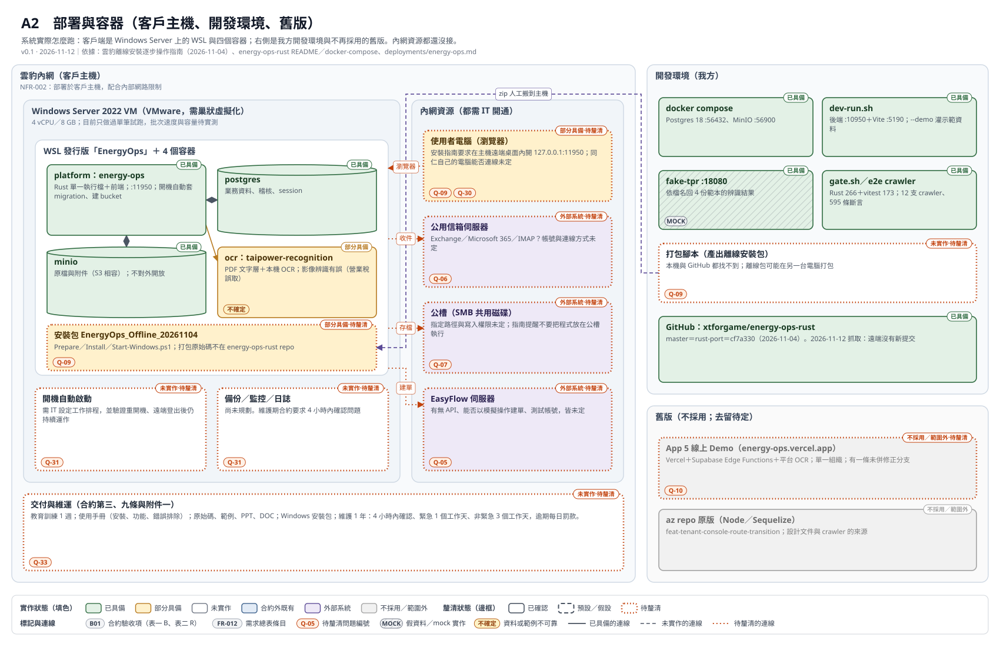

10 架構（全局→細節）
A2 部署與容器
系統實際怎麼跑。客戶端是 Windows Server 2022 上的 WSL 發行版，裡面跑 platform（energy-ops-rust）、postgres、minio、ocr 四個容器；右側是我方開發環境與不再採用的舊版。
依安裝指南，離線安裝包（2026-11-04）可在主機上安裝並通過健康檢查，且已驗證 4 份 PDF 的 54 項預期值；但打包原始碼不在 energy-ops-rust 裡，指南也只說明在主機本機以 127.0.0.1 使用。雲豹主機的實際安裝狀態，本次沒有確認。內網資源（信箱、公槽、EasyFlow、同仁電腦）全部還沒接。

重點
- 離線包只做過單筆試跑（4 vCPU／8 GB），批次與容量未實測（Q-32）。
- 目前要在主機的遠端桌面內開 127.0.0.1:11950，與需求總表 NFR-002「內部網路登入與操作」不符（Q-09）。
- 開機自動啟動、備份、監控、日誌都未規劃，但合約維護期有 4 小時回應與逾期罰款（Q-31、D08）。
- 依部署紀錄，App 5 線上 Demo（Vercel＋Supabase）在線上（本次未確認），去留待定（Q-10）。
圖中元素一覽
由圖的定義自動產生（tools/diagrams.mjs），與圖面一致。共 20 個元素：已具備 8、部分具備 3、未實作 4、外部系統 3、不採用／範圍外 2。
| 元素 | 說明 | 實作 | 釐清 | 關聯 |
|---|---|---|---|---|
| platform：energy-ops | Rust 單一執行檔＋前端；:11950；開機自動套 migration、建 bucket | 已具備 | 已確認 | — |
| postgres | 業務資料、稽核、session | 已具備 | 已確認 | — |
| minio | 原檔與附件（S3 相容）；不對外開放 | 已具備 | 已確認 | — |
| ocr：taipower-recognition | PDF 文字層＋本機 OCR；影像辨識有誤（營業稅誤取） | 部分具備 資料不確定 | 已確認 | — |
| 安裝包 EnergyOps_Offline_20261104 | Prepare／Install／Start-Windows.ps1；打包原始碼不在 energy-ops-rust repo | 部分具備 | 待釐清 | Q-09 |
| 開機自動啟動 | 需 IT 設定工作排程，並驗證重開機、遠端登出後仍持續運作 | 未實作 | 待釐清 | Q-31 |
| 備份／監控／日誌 | 尚未規劃。維護期合約要求 4 小時內確認問題 | 未實作 | 待釐清 | Q-31 |
| 使用者電腦（瀏覽器） | 安裝指南要求在主機遠端桌面內開 127.0.0.1:11950；同仁自己的電腦能否連線未定 | 部分具備 | 待釐清 | Q-09 Q-30 |
| 公用信箱伺服器 | Exchange／Microsoft 365／IMAP？帳號與連線方式未定 | 外部系統 | 待釐清 | Q-06 |
| 公槽（SMB 共用磁碟） | 指定路徑與寫入權限未定；指南提醒不要把程式放在公槽執行 | 外部系統 | 待釐清 | Q-07 |
| EasyFlow 伺服器 | 有無 API、能否以模擬操作建單、測試帳號，皆未定 | 外部系統 | 待釐清 | Q-05 |
| 交付與維運（合約第三、九條與附件一） | 教育訓練 1 週；使用手冊（安裝、功能、錯誤排除）；原始碼、範例、PPT、DOC；Windows 安裝包；維護 1 年：4 小時內確認、緊急 1 個工作天、非緊急 3 個工作天，逾期每日罰款。 | 未實作 | 待釐清 | Q-33 |
| docker compose | Postgres 18 :56432、MinIO :56900 | 已具備 | 已確認 | — |
| dev-run.sh | 後端 :10950＋Vite :5190；--demo 灌示範資料 | 已具備 | 已確認 | — |
| fake-tpr :18080 | 依檔名回 4 份範本的辨識結果 | 已具備 假資料 | 已確認 | — |
| gate.sh／e2e crawler | Rust 266＋vitest 173；12 支 crawler、595 條斷言 | 已具備 | 已確認 | — |
| 打包腳本（產出離線安裝包） | 本機與 GitHub 都找不到；離線包可能在另一台電腦打包 | 未實作 | 待釐清 | Q-09 |
| GitHub：xtforgame/energy-ops-rust | master＝rust-port＝cf7a330（2026-11-04）。2026-11-12 抓取：遠端沒有新提交 | 已具備 | 已確認 | — |
| App 5 線上 Demo（energy-ops.vercel.app） | Vercel＋Supabase Edge Functions＋平台 OCR；單一組織；有一條未併修正分支 | 不採用／範圍外 | 待釐清 | Q-10 |
| az repo 原版（Node／Sequelize） | feat-tenant-console-route-transition；設計文件與 crawler 的來源 | 不採用／範圍外 | 已確認 | — |
這一層的待釐清問題
- Q-05 EasyFlow／EIP 介接：EasyFlow 與會議中的 EIP 是同一套嗎？有沒有 API？只能用模擬操作（RPA）的話，IT 是否允許？有沒有測試環境與測試帳號？加簽是系統自動加還是人工加？
- Q-06 收件信箱：收台電、天能電費單與發票的信箱是哪一種（Exchange、Microsoft 365、Gmail、IMAP）？系統以什麼方式、什麼帳號存取？寄件者識別規則？客戶主機能否連到信箱？
- Q-07 指定檔名與路徑：「指定檔名及路徑」是否以 SOP 與【電費單超強表格】的規則為準（掃描檔：日期_案場編號_(子公司)案場名；發票：(區域)子公司_發票號碼_案場-電號）？公槽路徑為何、主機能否寫入（SMB 權限）？LINE 群組歸檔是否停用？
- Q-09 部署與使用方式：離線安裝包 EnergyOps_Offline_20261104 的打包原始碼在哪裡？是否就是 energy-ops-rust cf7a330？同仁是從自己的電腦用瀏覽器登入（內網），還是都遠端進主機使用？預計幾個帳號？
- Q-10 舊版的去留：App 5 線上 Demo（energy-ops.vercel.app，Vercel＋Supabase）與 az repo 原版是否下線？Supabase、Vercel 上的資料與帳號如何處理？
- Q-30 帳號與角色：使用者名單與職務；現有五個能源角色（系統管理員、高階主管、業務承辦、財務、唯讀）如何對應雲豹職務？是否要接 AD／單一登入？密碼政策？
- Q-31 維運：備份與還原、開機自動啟動（工作排程）、監控與日誌、維護期的通報窗口與遠端維護方式？
- Q-33 訓練與文件交付：一週教育訓練的時間、地點、對象；使用手冊、PPT、DOC 的範圍與格式；原始碼交付方式？